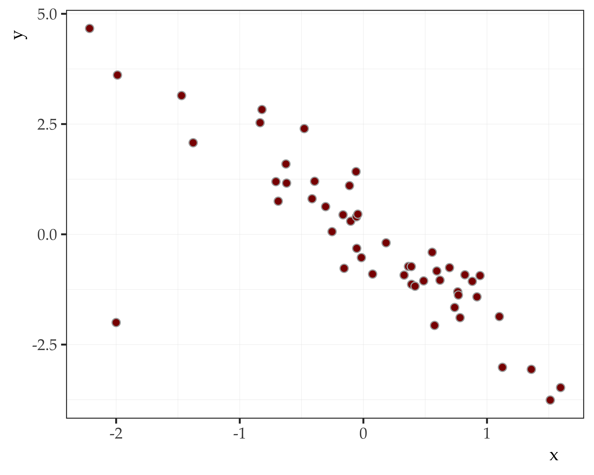
Data Science for Linguists
The linear model: Assumptions, diagnotics, and interpretation
Joseph V. Casillas, PhD
Rutgers University
Last update: 2025-03-02
Assumptions
Assumptions
We make a lot of assumptions
2. a hypothesis that is taken for granted
3. a thing that is accepted as true or as certain to happen, without proof
- About the world
- About others
- About reactions
- About academia
- The sun will rise tomorrow
- People are generally X
- They will find my joke funny
- Reviewer 2 is evil
Assumptions
Statistical assumptions
- Every model has assumptions
- They need to be met for the model to work properly and be trustworthy
- It is not standard practice to report whether all assumptions have been met when writing up results… but it should be
- We will make a habit of assessing models and incorporating the relevant information in prose
Assumptions
Regression assumptions
We can break the assumptions up into 3 areas:
- Model specification
- Measurement error
- The error term
Model specification
Model specification
Specification error
There should be no specification error
- The relationship between xi and yi is linear: \[y_i = \alpha + \beta x_i + \epsilon _i\]
- Including irrelevant variables 🤷🏽
- Omitting relevant variables 👎🏽
Importance: HIGH
Model specification
Including an irrelevant variable (sin of commission): 🤷🏽
- Similar to a Type I error
- Adds to the error of prediction, but it does not bias the parameter estimates
- If model includes multiple predictors, other estimates are not influenced by the irrelevant variable
- Though the parameter estimates won’t be biased, the standard error terms around each beta weight will increase (this affects t-ratio and p-value)
Model specification
Including an irrelevant variable (sin of commission): 🤷🏽
- For example, imagine a situation in which you model employee performance as a function of a bunch of good predictors
- Adding the variable of astrological horoscope sign will not bias the other estimates
- You are considering something that doesn’t matter, i.e., astrology
Model specification
Excluding a relevant variable (sin of omission): 👎🏽
- Similar to a Type II error
- This is much more serious!
- This will bias your parameter estimates
- You are leaving something important out (variance left unexplained)
Model specification
Excluding a relevant variable (sin of omission): 👎🏽
- For example, if you want to model RT as a function of working memory but you forget to look at age
- Then your prediction might be wrong
- You don’t know which way you are biasing things either!
- You could be either overestimating or underestimating the other regression parameters
Model specification
What to do
After including an irrelevant predictor:
- Drop the irrelevant variable
- Not much of a problem
After excluding a relevant predictor:
- Look at data again to see if it is in there
- Hope and Pray!
- If it’s not in you data, you are SOL
- You need to repeat the study!
- There is a problem in your design and there is no mathematical solution to fix this problem
Measurement error
Measurement error
Measuring things is hard
- How far away is that lion?
- How much milk do I need?
- Can I park there?
- How much weight did I gain?
- Human error
- Specificity
- Operationalizations
- Repeatability
Measurement error
There should be no measurement error
- Variables xi and yi should be as accurate as possible
Importance: high
Measurement error
Consequences of measurement error
- Your models will estimate the parameters you specify
- But you won’t know if the estimates are reliable
- Large degree of unquantifiable uncertainty
- Cannot “safely” do NHST
- Your research may be reproducible, but probably will not be replicable
Measurement error
What you can do
- The solution to this problem revolves around proper planning a priori
- Operationally define every feasible aspect of how and what you will measure
- Use previous literature, if available
- Preregister decisions
- Repeated measures, if possible
- Random, 3rd party quality checks
- Measurement error models, if possible
The error term
The error term
About the error term
The error term should meet the following characteristics…
- Mean = 0
- Homoskedasticity
- No autocorrelation
- Predictor not correlated with error term
- Error is normally distributed
About the error term
Mean of 0
If the mean of the error term deviates far from 0…
- Intercept can be biased
- Slope estimates will not be biased
Importance: low… unless you are interested in the intercept.
About the error term
Homoskedasticity
- Variance around predicted values should be consistent
- Common simple inspection is to look at scatter plot of fitted vs. x-values (should look like blob with no interesting patterns)
- If variance is heteroskedastic you will typically see fan-like patterns
- Will not bias parameter estimates
- Will increase confidence intervals, thus affects t-ratios and p-values
Importance: medium/high
About the error term
No autocorrelation
- If the residuals are autocorrelated, it means that the prediction error of a given observation depends on that of the previous observation
- This shows up as a clear unexplained pattern in the y variable
- Most common in repeated measures and longitudinal data
- Will not bias parameter estimates
- Will affect confidence intervals, t-ratios, p-values
- Increased chance of Type II error
Importance: High, but uncommon in standard regression
About the error term
Predictor(s) should not be correlated with error term
- Typically the result of omitting a relevant variable (sin of omission)
- Will bias parameter estimates
- Solution: include missing variable
Importance: high
About the error term
Error (residuals) should be normally distributed
- There is no a priori reason for error to be anything but normally distributed
- It should become standard practice for you to examine your residuals to see if they are normally distributed or not
- If they aren’t normally distributed there is a substantial possibility of Type II error
- If this is the case, then the residuals may not be “pure” error, and you may have omitted a relevant variable from the equation that is making the residuals not be normally distributed
- In other words, the residuals may contain systematic variance that can still be explained by something else
- You cannot conclude with 100% certainty that a Type II error has been committed, but you might strongly suspect it
Importance: high
Summing up
- Model specification
- The relationship between xi and yi is linear
- Including irrelevant variables
- Omitting relevant variables
- Measurement error
- The error term
- Mean = 0
- Homoskedasticity
- No autocorrelation
- Predictor not correlated with error term
- Error is normally distributed
Diagnostics Examples
Diagnostics
Remember those “residuals”?
- A residual represents prediction error in our model with regard to a single point.
- Our
mtcarsmodel predicted that a 6 ton car should get 5.22 mpg. - If in reality it gets 10.22 mpg, then the residual for that specific data point would be 5 mpg.
- Our
- Remember: All models are wrong.
- Our models will always be off by at least a little bit for most of the observations we try to fit.
- Nonetheless, it is good practice to examine the residuals of your models in order to help assess goodness-of-fit.
- Specifically, we need to make sure that there aren’t any unexpected patterns because that would suggest that our model does not properly fit our data.
Diagnostics
Considerations for model diagnostics
1. Model assumptions
2. Outliers
Diagnostics
The relationship between xi and yi is linear.
- Double check linear specification
- Eyeball it
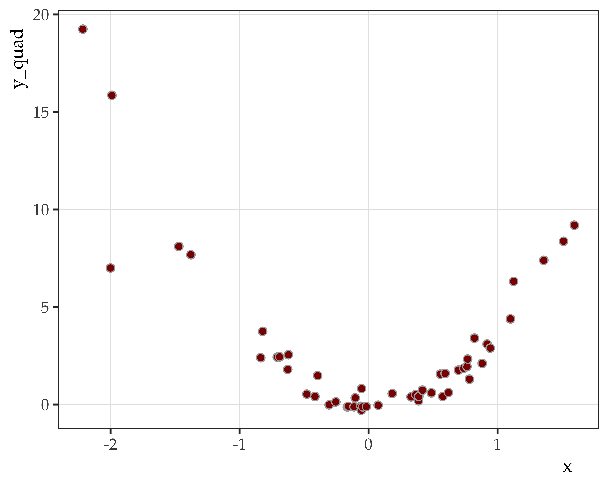
Diagnostics
The mean of residuals is zero
- Fit model
- Get residuals
- Test manually
Diagnostics
Homoskedasticity of residuals
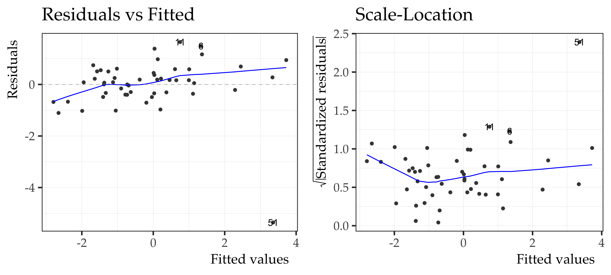
Diagnostics
Homoskedasticity of residuals
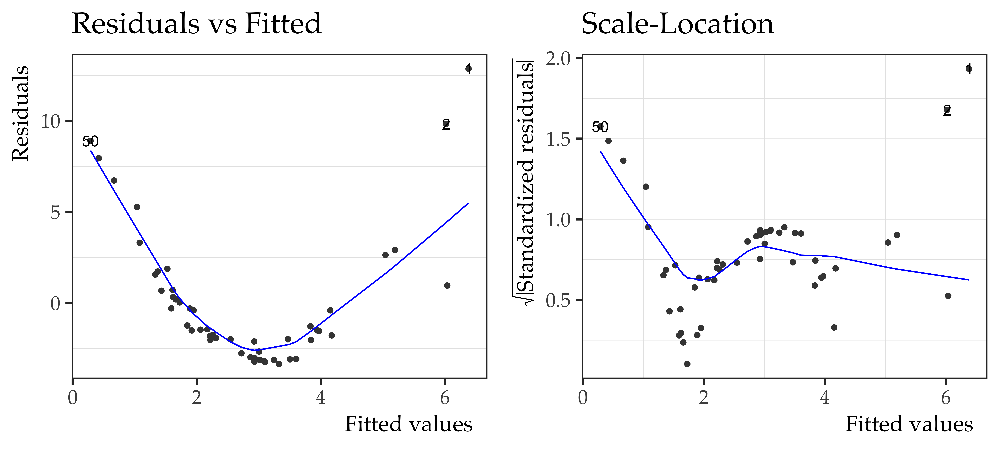
Diagnostics
No autocorrelation of residuals
- Visual inspection
- Durbin-Watson test
Durbin-Watson test
data: mod1
DW = 1.119, p-value = 0.0002656
alternative hypothesis: true autocorrelation is greater than 0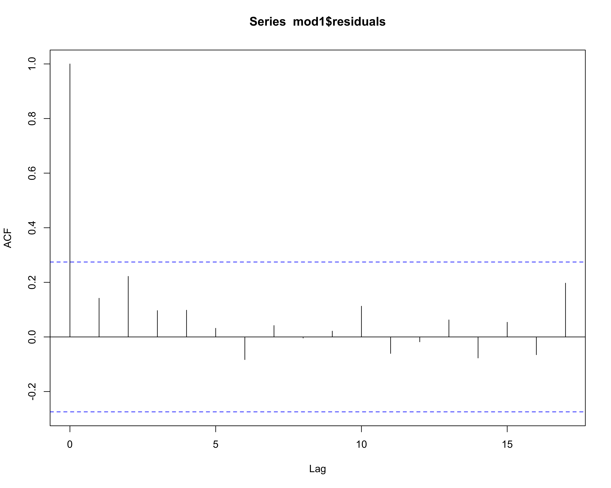
Diagnostics
No autocorrelation of residuals
- Visual inspection
- Durbin-Watson test
Durbin-Watson test
data: mod2
DW = 0.26212, p-value < 2.2e-16
alternative hypothesis: true autocorrelation is greater than 0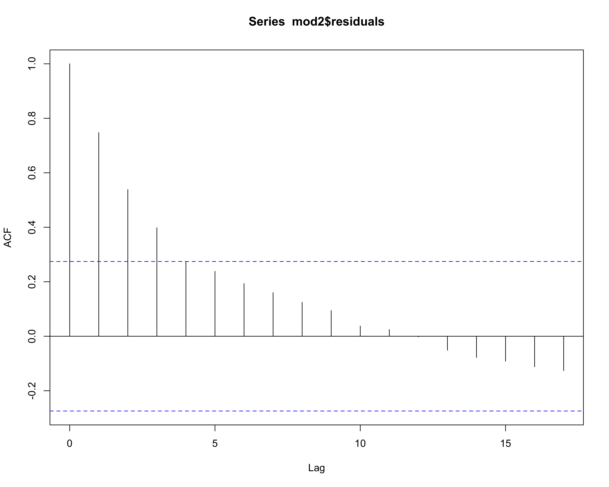
Diagnostics
No autocorrelation of residuals - Correction
Durbin-Watson test
data: mod2_fix
DW = 2.6825, p-value = 0.9875
alternative hypothesis: true autocorrelation is greater than 0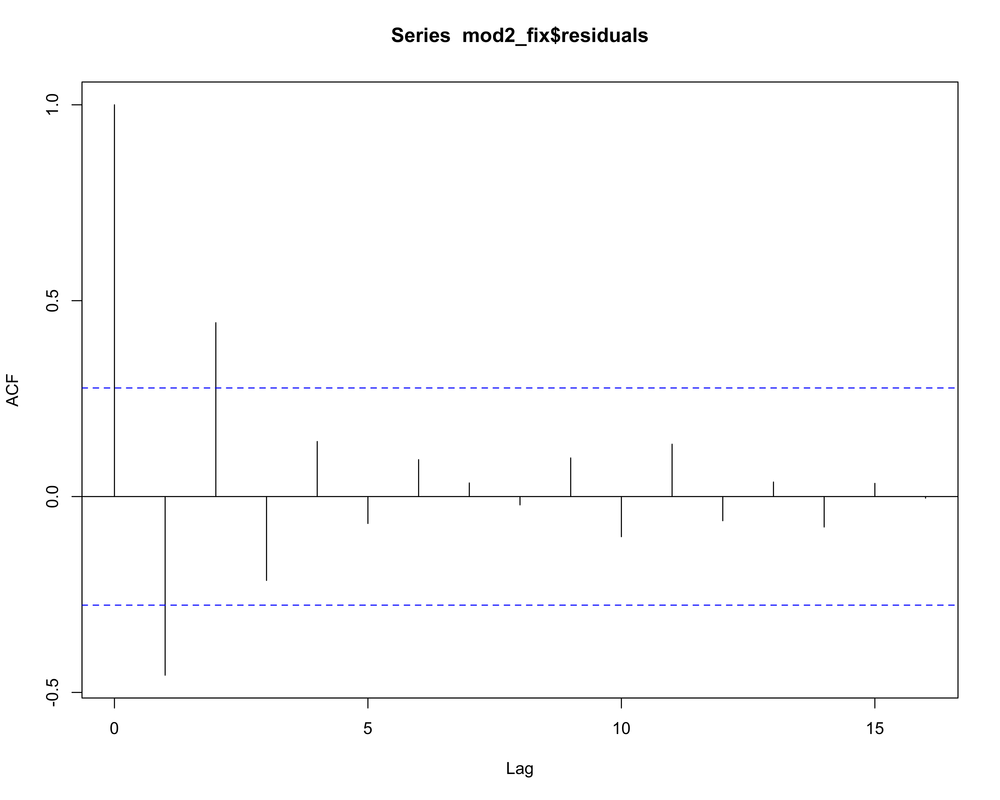
mod2
Diagnostics
Predictors and residuals are uncorrelated
- Test for correlation
- Think about your study
Pearson's product-moment correlation
data: assumptions_data$x and mod1$residuals
t = -5.72e-16, df = 49, p-value = 1
alternative hypothesis: true correlation is not equal to 0
95 percent confidence interval:
-0.2755837 0.2755837
sample estimates:
cor
-8.171416e-17 Diagnostics
Predictors and residuals are uncorrelated
- Test for correlation
- Think about your study
Pearson's product-moment correlation
data: assumptions_data$x and mod2$residuals
t = -5.0882e-16, df = 49, p-value = 1
alternative hypothesis: true correlation is not equal to 0
95 percent confidence interval:
-0.2755837 0.2755837
sample estimates:
cor
-7.268887e-17 Diagnostics
Normality of residuals
- QQplots
Dealing with influential data points
Outliers/influential data points
- An influential point is one that would significantly change the fit if removed from the data
- Cook’s distance is a commonly used influence measure
Leverage
- The leverage of an observation measures its ability to move the regression line by simply moving up/down along the y-axis.
- The measurement represents the amount by which the predicted value would change if the observation was shifted one unit in the y-direction.
- The leverage always takes values between 0 and 1.
- A point with 0 leverage does not effect the regression line.
Influential data points
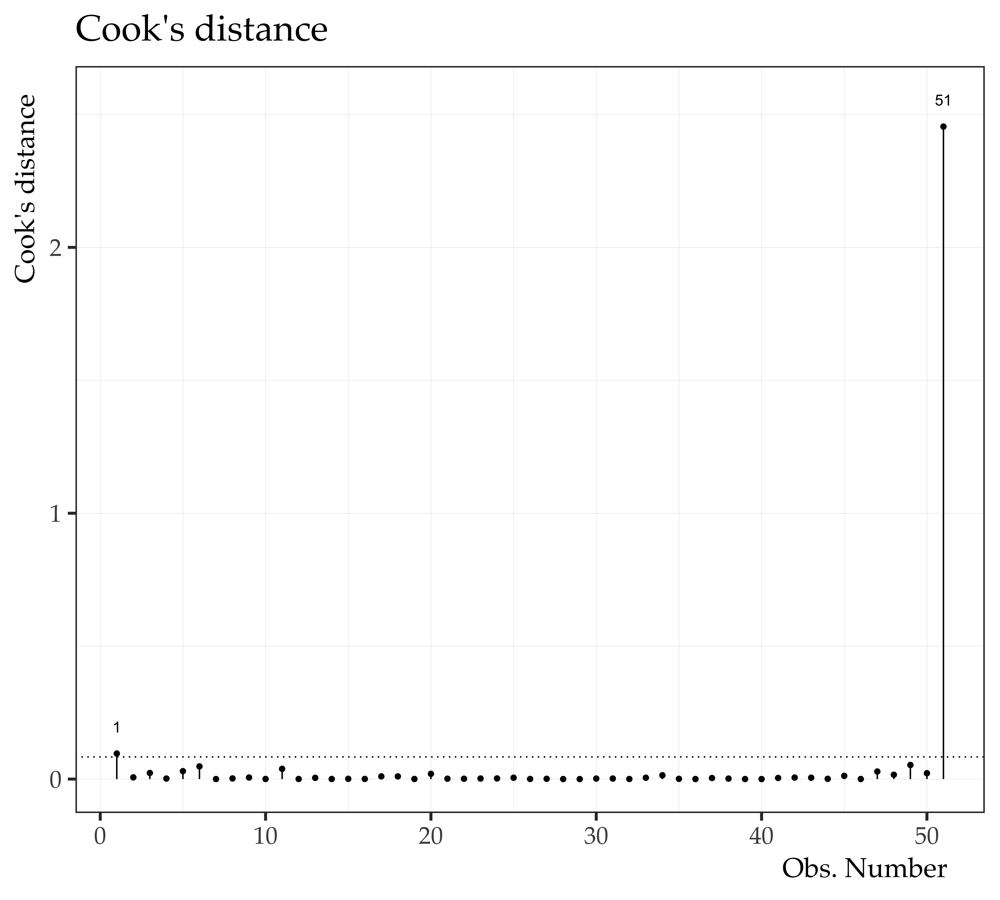
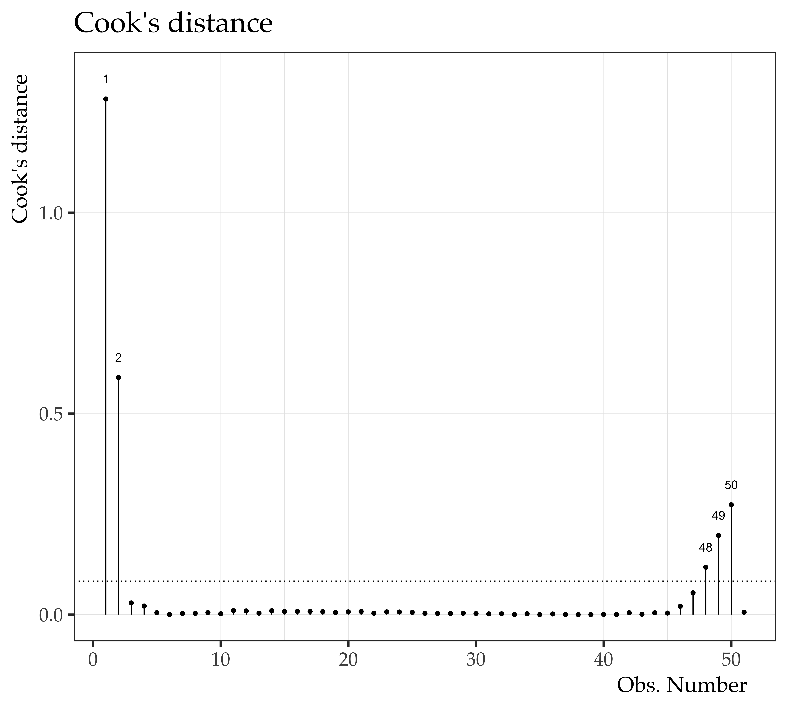
Influential data points
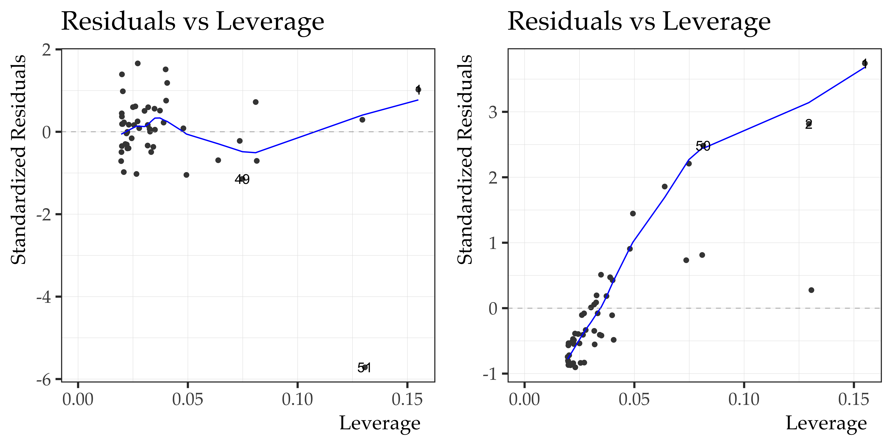Influential data points
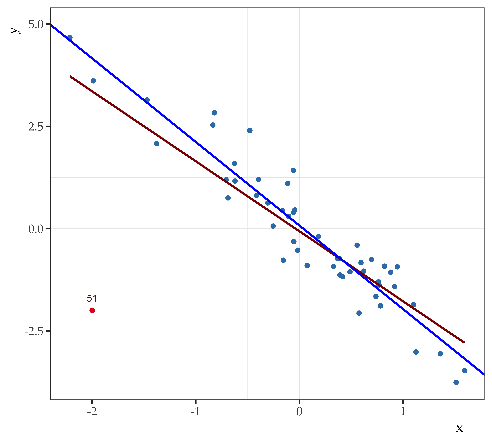
Mod1 with influential data point:
\[y = -0.07 + -1.71 x\]
Mod1 without influential data point:
\[y = 0.07 + -2.04 x\]
Global test of model assumptions
- It is also possible to use the package
gvlmato test model assumptions. - It seems rather conservative
- I don’t know too much about it.
##
## Call:
## lm(formula = y ~ x, data = assumptions_data)
##
## Coefficients:
## (Intercept) x
## -0.06577 -1.71081
##
##
## ASSESSMENT OF THE LINEAR MODEL ASSUMPTIONS
## USING THE GLOBAL TEST ON 4 DEGREES-OF-FREEDOM:
## Level of Significance = 0.05
##
## Call:
## gvlma(x = mod1)
##
## Value p-value Decision
## Global Stat 557.334 0.000e+00 Assumptions NOT satisfied!
## Skewness 73.855 0.000e+00 Assumptions NOT satisfied!
## Kurtosis 457.890 0.000e+00 Assumptions NOT satisfied!
## Link Function 6.284 1.218e-02 Assumptions NOT satisfied!
## Heteroscedasticity 19.304 1.115e-05 Assumptions NOT satisfied!##
## Call:
## lm(formula = y ~ x, data = assumptions_data[1:50, ])
##
## Coefficients:
## (Intercept) x
## 0.07471 -2.04296
##
##
## ASSESSMENT OF THE LINEAR MODEL ASSUMPTIONS
## USING THE GLOBAL TEST ON 4 DEGREES-OF-FREEDOM:
## Level of Significance = 0.05
##
## Call:
## gvlma(x = noOut)
##
## Value p-value Decision
## Global Stat 2.4877 0.6468 Assumptions acceptable.
## Skewness 0.6541 0.4186 Assumptions acceptable.
## Kurtosis 0.3175 0.5731 Assumptions acceptable.
## Link Function 0.9478 0.3303 Assumptions acceptable.
## Heteroscedasticity 0.5683 0.4509 Assumptions acceptable.##
## Call:
## lm(formula = y_quad ~ x, data = assumptions_data)
##
## Coefficients:
## (Intercept) x
## 2.838 -1.600
##
##
## ASSESSMENT OF THE LINEAR MODEL ASSUMPTIONS
## USING THE GLOBAL TEST ON 4 DEGREES-OF-FREEDOM:
## Level of Significance = 0.05
##
## Call:
## gvlma(x = mod2)
##
## Value p-value Decision
## Global Stat 87.100 0.000e+00 Assumptions NOT satisfied!
## Skewness 25.674 4.042e-07 Assumptions NOT satisfied!
## Kurtosis 14.082 1.750e-04 Assumptions NOT satisfied!
## Link Function 45.552 1.487e-11 Assumptions NOT satisfied!
## Heteroscedasticity 1.793 1.806e-01 Assumptions acceptable.Interpretation
Interpretation
Make sense of it all
Call:
lm(formula = mpg ~ wt, data = mtcars)
Residuals:
Min 1Q Median 3Q Max
-4.5432 -2.3647 -0.1252 1.4096 6.8727
Coefficients:
Estimate Std. Error t value Pr(>|t|)
(Intercept) 37.2851 1.8776 19.858 < 2e-16 ***
wt -5.3445 0.5591 -9.559 1.29e-10 ***
---
Signif. codes: 0 '***' 0.001 '**' 0.01 '*' 0.05 '.' 0.1 ' ' 1
Residual standard error: 3.046 on 30 degrees of freedom
Multiple R-squared: 0.7528, Adjusted R-squared: 0.7446
F-statistic: 91.38 on 1 and 30 DF, p-value: 1.294e-10- Function call
- Model residuals
- Model coefficients
- Significance codes
- Variance explained
- F-ratio
Interpretation
Make sense of it all
lm(formula = mpg ~ wt, data = mtcars)- Function call
- Model residuals
- Model coefficients
- Significance codes
- Variance explained
- F-ratio
- This is the model you fit using
lm(). - It is the exact same code you typed into R.
- Use to double check to see if you made any typos.
Interpretation
Make sense of it all
Min. 1st Qu. Median Mean 3rd Qu. Max.
-4.5432 -2.3647 -0.1252 0.0000 1.4096 6.8727 - Function call
- Model residuals
- Model coefficients
- Significance codes
- Variance explained
- F-ratio
- Should be normally distributed
- Absolute values of 1Q/3Q should be similar
- Mean = 0, median close to 0
- If anything is off you can see it here, but check residual plots
Interpretation
Make sense of it all
Estimate Std. Error t value Pr(>|t|)
(Intercept) 37.285126 1.877627 19.857575 8.241799e-19
wt -5.344472 0.559101 -9.559044 1.293959e-10- Function call
- Model residuals
- Model coefficients
- Significance codes
- Variance explained
- F-ratio
- Meat and potatoes of the output
- Parameter estimates of intercept and predictor(s)
- Express strength of relationship between predictor(s) and criterion
- One unit change in predictor will change outcome by…
Interpretation
Make sense of it all
Call:
lm(formula = mpg ~ wt, data = mtcars)
Residuals:
Min 1Q Median 3Q Max
-4.5432 -2.3647 -0.1252 1.4096 6.8727
Coefficients:
Estimate Std. Error t value Pr(>|t|)
(Intercept) 37.2851 1.8776 19.858 < 2e-16 ***
wt -5.3445 0.5591 -9.559 1.29e-10 ***
---
Signif. codes: 0 '***' 0.001 '**' 0.01 '*' 0.05 '.' 0.1 ' ' 1
Residual standard error: 3.046 on 30 degrees of freedom
Multiple R-squared: 0.7528, Adjusted R-squared: 0.7446
F-statistic: 91.38 on 1 and 30 DF, p-value: 1.294e-10- Function call
- Model residuals
- Model coefficients
- Significance codes
- Variance explained
- F-ratio
- Assessment of statistical significance of predictor(s) and the intercept
- Everything except “.” is probably “good”
Interpretation
Statistical Significance
As long as the effect is not statistically equivalent to 0 it is called statistically significant
It may be an effect of trivial magnitude
Basically, it means that this prediction is better than nothing
It doesn’t really mean it is really “significant” in the terms that we think of as significance
It doesn’t indicate importance
Interpretation
Significance versus Importance
How do we know if the “significant” effect we found is actually important?
- The coefficient of determination (r-squared) tells you how much of the variance you have explained
- It tells us how big the effect is and not just that it is not equal to zero
- You want to know if your predictions are better than chance alone (F-ratio) but you also want to know how explanatory your predictions are (r-squared)
How important are the chosen predictors?
- The numerators in both ratios are similar
- They represent the predicted portion of the variance
Interpretation
Make sense of it all
Call:
lm(formula = mpg ~ wt, data = mtcars)
Residuals:
Min 1Q Median 3Q Max
-4.5432 -2.3647 -0.1252 1.4096 6.8727
Coefficients:
Estimate Std. Error t value Pr(>|t|)
(Intercept) 37.2851 1.8776 19.858 < 2e-16 ***
wt -5.3445 0.5591 -9.559 1.29e-10 ***
---
Signif. codes: 0 '***' 0.001 '**' 0.01 '*' 0.05 '.' 0.1 ' ' 1
Residual standard error: 3.046 on 30 degrees of freedom
Multiple R-squared: 0.7528, Adjusted R-squared: 0.7446
F-statistic: 91.38 on 1 and 30 DF, p-value: 1.294e-10- Function call
- Model residuals
- Model coefficients
- Significance codes
- Variance explained
- F-ratio
- Assessment of R2
- More variance explained is better
- Should pretty much always be reported
Interpretation
Make sense of it all
Call:
lm(formula = mpg ~ wt, data = mtcars)
Residuals:
Min 1Q Median 3Q Max
-4.5432 -2.3647 -0.1252 1.4096 6.8727
Coefficients:
Estimate Std. Error t value Pr(>|t|)
(Intercept) 37.2851 1.8776 19.858 < 2e-16 ***
wt -5.3445 0.5591 -9.559 1.29e-10 ***
---
Signif. codes: 0 '***' 0.001 '**' 0.01 '*' 0.05 '.' 0.1 ' ' 1
Residual standard error: 3.046 on 30 degrees of freedom
Multiple R-squared: 0.7528, Adjusted R-squared: 0.7446
F-statistic: 91.38 on 1 and 30 DF, p-value: 1.294e-10- Function call
- Model residuals
- Model coefficients
- Significance codes
- Variance explained
- F-ratio
- Assesses overall significance… omnibus model
- If F-ratio is significant, at least one predictor or intercept is too
- If F-ratio is not significant your experiment is over
Interpretation
A note about F-ratios
If you have an ANOVA background… Mean Squared Deviations
\[MS_{Total} = \frac{\sum{(y_i - \bar{y})^2}}{n-1}\]
\[MS_{Predicted} = \frac{\sum{(\hat{y}_i - \bar{y})^2}}{k}\]
\[MS_{Error} = \frac{\sum{(y_i - \hat{y}_i)^2}}{n - k - 1}\]
\[F_{(k),(n-k-1)} = \frac{\sum{(\hat{y}_i - \bar{y})^2} / (k)}{\sum{(y_i - \hat{y}_i)^2} / (n - k - 1)}\]
Interpretation
A note about F-ratios
If you have an ANOVA background… Mean Squared Deviations
\[MS_{Total} = \frac{SS_{Total}}{df_{Total}}\]
\[MS_{Predicted} = \frac{SS_{Predicted}}{df_{Predicted}}\]
\[MS_{Error} = \frac{SS_{Error}}{df_{Error}}\]
\[F = \frac{MS_{Predicted}}{MS_{Error}}\]
Interpretation
Degrees of Freedom
Derived from the number of sample statistics used in your computation:
- e.g., for a standard deviation, you subtract all the raw scores from the mean
- Since you used the sample mean, you used up 1 df
- df = n - 1
Interpretation
Degrees of Freedom
In the denominator of the standard deviation, you are using a sample statistic, not a population parameter, so you have df = n - 1:
- n - 1 reflects the fact that you used a statistic and if you know one number (the mean) there is less uncertainty remaining
- If you know the mean and you have 10 scores, then you only need 9 of the remaining scores to predict all 10 of them
Usually we have an F-table with associated degrees of freedom to show us whether the F-ratio is “statistically significant”:
- Numerator df = k
- Denominator df = n - k - 1
Interpretation
Degrees of Freedom
\[df_{Total} = n - 1\]
\[df_{Predicted} = k\]
\[df_{Error} = n - k - 1\]
\[df_{Total} = df_{Predicted} + df_{Error}\]
Exercises
References
Figueredo, A. J. (2013). Multiple regression. Statistical Methods in Psychological Research.
Lewis-Beck, M. (1980). Bivariate regression: Assumptions and inferences. In M. Lewis-Beck (Ed.), Applied regression: An introduction (pp. 26–46). Newbury Park, CA: Sage.
Schroeder, L. D., Sjoquist, D. L., & Stephan, P. E. (1986). Linear regression. In L. D. Schroeder, D. L. Sjoquist, & P. E. Stephan (Eds.), Understanding regression analysis: An introductory guide (pp. 11–28). Newbury Park, CA: Sage.
Wickham, H., & Grolemund, G. (2016). R for data science: Import, tidy, transform, visualize, and model data. O’Reilly Media.